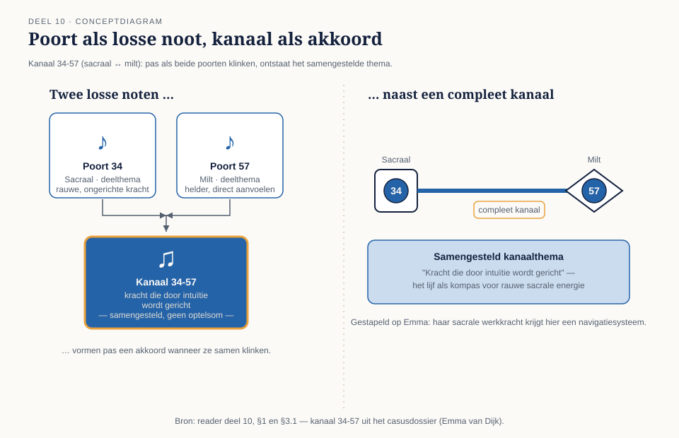

Een kanaal is meer dan "compleet of hangend". Elke poort draagt een eigen deelthema, en pas wanneer de tegenoverliggende poort ook geactiveerd is, ontstaat het samengestelde kanaalthema — een derde, eigen betekenis, geen optelsom. In dit deel leer je het vierstappenplan om zo'n kanaal te lezen, en pas je het grondig toe op de vijf kanalen uit het casusdossier.
11secties
±2u10dagdeel + huiswerk
6controlevragen
4stappen in het leesplan
01
Poort als deelklank, kanaal als akkoord
⏱ 14 min
Een poort draagt op zichzelf al een thema, ontleend aan het bijbehorende I Tjing-hexagram (deel 1). Maar dat thema is onvolledig zolang de poort hangt (deel 6): het is een geur, geen stem. Pas wanneer de tegenoverliggende poort van hetzelfde kanaal óók geactiveerd is, ontstaat wat de canon een compleet kanaal noemt — en krijgt het thema een vaste, samengestelde betekenis.
Vergelijk het met twee losse noten die pas een akkoord vormen wanneer ze samen klinken. Het kanaalthema is dus nooit de simpele optelsom van de twee poortthema's; het is een eigen, derde ding dat uit hun combinatie ontstaat.

Figuur 10-1 — twee losse noten worden pas een akkoord wanneer ze samen klinken; kanaal 34-57 (sacraal-milt) toont hetzelfde principe met twee poorten en een samengesteld thema
Dit onderscheid is meer dan beeldspraak. Het verklaart waarom een hangende poort (deel 6) een "geur" geeft van het thema, maar niet het volledige kanaalthema activeert — en dus waarom twee mensen met dezelfde hangende poort, maar een andere partnerpoort aan de overkant, heel verschillend op hetzelfde onderwerp kunnen reageren.
Controlevraag
Uit Werkboek deel 10, Opdracht 10.1
1Waarom is het kanaalthema niet gelijk aan "poortthema A + poortthema B"?Toon antwoord
Omdat het kanaalthema een derde, eigen betekenis is die pas ontstaat wanneer beide poorten samen klinken — net als twee losse noten die pas een akkoord vormen op het moment dat ze tegelijk klinken. Zolang maar één poort van het paar geactiveerd is (een hangende poort, deel 6), geeft die alleen een "geur" van het thema: onvolledig en nog geen vast akkoord. Dat verklaart ook waarom twee mensen met dezelfde hangende poort heel verschillend kunnen reageren als hun partnerpoort aan de overkant anders is.
02
Het vierstappenplan
⏱ 12 min
Voor elk kanaal, bekend of onbekend, geldt dezelfde methode:
Identificeer de twee poorten en de twee centra die ze met elkaar verbinden (deel 2).
Zoek het deelthema van elke poort apart op in betrouwbaar naslagwerk (zie sectie 9) — wat draagt elke kant afzonderlijk bij?
Zoek het samengestelde kanaalthema — de officiële canon-naam en -beschrijving van het kanaal als geheel.
Stapel het kanaalthema bovenop wat je al weet: het centrum (deel 5-6), het type/autoriteit (deel 3-4) en het profiel (deel 9) — en eindig, als altijd, in een toetsvraag.
Dit stappenplan gebruik je vandaag op vijf bekende kanalen, en straks — met naslagwerk erbij — op elk kanaal dat je in een nieuwe chart tegenkomt.
Wat "echte synthese" onderscheidt van een optelsom
Stap 3 levert alleen iets op als het kanaalthema iets zegt dat geen van beide deelthema's apart al zei. Noem je alleen "kracht" én "intuïtie" na elkaar op, dan is stap 3 overgeslagen; benoem je dat kracht hier door intuïtie wordt gericht, dan staat er een synthese.
Controlevragen
Uit Werkboek deel 10, Opdracht 10.2 en 10.3
1Bij het naspelen van een kanaal in duo's controleert je partner op drie punten. Welke?Toon antwoord
(a) het deelthema van elke poort apart, (b) het samengestelde kanaalthema, en (c) hoe dat kanaalthema gestapeld wordt op de betreffende casuspersoon. Mis je een van de drie, dan is de uitleg onvolledig — vooral stap (b) wordt vaak overgeslagen ten gunste van gewoon de twee deelthema's naast elkaar noemen.
2Waaraan herkennen de andere groepen of een gepresenteerd kanaal een echte synthese is, of toch een simpele optelsom is gebleven?Toon antwoord
Een echte synthese benoemt iets dat geen van beide poortthema's apart al zei — een nieuwe, derde eigenschap die ontstaat uit de combinatie. Een optelsom noemt de twee deelthema's simpelweg na elkaar op ("dit kanaal gaat over kracht, en ook over intuïtie") zonder ze samen te smeden tot één ding.
03
Emma — kanaal 34-57 (sacraal ↔ milt)
⏱ 12 min
Poort 34 (sacraal): het deelthema is rauwe, ongerichte kracht — vermogen om iets te doen, zonder van zichzelf uit een richting te kiezen. Poort 57 (milt): het deelthema is helder, in-het-nu intuïtief waarnemen — precies aanvoelen wat gezond of passend is op dit moment.
Samengesteld: kracht die door intuïtie wordt gericht — canoniek vaak omschreven als het vermogen om in het moment te reageren op wat werkelijk nodig is, met het lijf als kompas.
Gestapeld op Emma
Haar sacrale werkkracht (Generator, deel 3) krijgt hier een navigatiesysteem: het is niet alleen "energie hebben", maar energie die precies weet wanneer en waarop ze moet inzetten — wat verklaart waarom haar buik-nee bij de beleidsfunctie (niveau 1) zo specifiek en onmiddellijk was.
04
Emma — kanaal 53-42 (wortel ↔ sacraal)
⏱ 12 min
Poort 53 (wortel): het deelthema is de drang om te beginnen — nieuwe ontwikkeling in gang zetten, een cyclus openen. Poort 42 (sacraal): het deelthema is een cyclus afmaken — iets tot een natuurlijk einde brengen voordat het volgende begint.
Samengesteld: een kanaal van cycli: goed in beginnen én in afmaken, zolang beide fasen hun natuurlijke tijd krijgen.
Gestapeld op Emma
Dit verklaart methodisch waarom zij "de motor van de afdeling" is (casusdossier) — niet toevallige energie, maar een ingebouwd vermogen om projecten van begin tot eind te dragen. Het risico dat de canon hierbij noemt: een nieuwe cyclus starten vóórdat de vorige is afgerond, wat de energie van dit kanaal ontregelt — een precieze waarschuwing voor iemand die overweegt halsoverkop naar beleidswerk te stappen.
Controlevraag
Uit Werkboek deel 10, Opdracht 10.4
1Emma heeft twee complete kanalen (34-57 en 53-42), beide met het sacraal. Versterken deze elkaar, spreken ze elkaar tegen, of vullen ze elkaar aan?Toon antwoord
Ze vullen elkaar aan. Kanaal 34-57 zorgt ervoor dat haar sacrale kracht intuïtief gericht wordt — ze voelt precies wanneer en waarop ze moet inzetten. Kanaal 53-42 zorgt ervoor dat ze niet alleen kan beginnen, maar ook kan afmaken, zolang beide fasen hun tijd krijgen. Samen verklaren ze methodisch waarom zij "de motor van de afdeling" is: gerichte inzet én volhoudvermogen tot het einde. Tegelijk stapelt het risico van 53-42 (een nieuwe cyclus starten vóór de vorige is afgerond) een extra waarschuwing op voor haar overweging om naar beleidswerk over te stappen.
05
Jasper — kanaal 43-23 (ajna ↔ keel)
⏱ 12 min
Poort 43 (ajna): het deelthema is plotseling, individueel inzicht — een doorbraak in begrip die niet stapsgewijs maar in één keer komt en zich moeilijk laat beargumenteren aan wie het niet direct ziet. Poort 23 (keel): het deelthema is het vermogen om complexe of ongewone ideeën te versimpelen tot iets wat een groep kan begrijpen.
Samengesteld: individueel inzicht dat, mits op het juiste moment gedeeld, uitgroeit tot iets waar een groep echt iets aan heeft — canoniek soms "het kanaal van de individuele stem" genoemd.
Gestapeld op Jasper
Zijn scherpe, ongevraagde observaties (casusdossier) zijn dus geen toevallige irritatie maar een compleet mechanisme dat wérkt — mits getimed. Het kanaal zelf bevestigt zijn Projector-strategie (wachten op uitnodiging, deel 3) vanuit een geheel andere hoek: een inzicht dat vóór zijn tijd wordt gedeeld, wordt letterlijk niet begrepen, hoe correct het ook is.
06
Sofie — kanaal 20-34 (keel ↔ sacraal)
⏱ 10 min
Poort 20 (keel): het deelthema is aanwezigheid in het nu — handelen en spreken zonder vertraging door overdenken. Poort 34 (sacraal, opnieuw — nu in een ander kanaal): hier gecombineerd met poort 20 draagt het dezelfde rauwe kracht als in kanaal 34-57, maar nu direct gekoppeld aan expressie.
Samengesteld: doen is spreken — canoniek een van de meest directe manifestatiekanalen: wat er gebeurt, gebeurt vrijwel gelijktijdig met de impuls, zonder tussenstap.
Gestapeld op Sofie
Haar vermogen om tegelijk een foodtruck, catering en een opleiding te dragen (casusdossier) is precies dit kanaal in actie — niet chaos, maar onvertraagde omzetting van sacrale energie in zichtbare actie. Het risico dat de canon noemt: anderen kunnen het tempo niet bijbenen en lezen snelheid aan voor onbezonnenheid.
07
Ruben — kanaal 21-45 (hart ↔ keel)
⏱ 10 min
Poort 21 (hart): het deelthema is de wil tot controle over de eigen materiële en organisatorische omgeving — zorgen dat middelen en mensen goed worden ingezet. Poort 45 (keel): het deelthema is het "bezit" en de stem van de groep — spreken namens en over de gedeelde middelen van een gemeenschap.
Samengesteld: canoniek een leiderschaps- en materiekanaal: het vermogen om namens een groep te spreken over hoe gezamenlijke middelen worden verdeeld en bestuurd.
Gestapeld op Ruben
Dit kanaal geeft zijn dertig jaar initiëren (casusdossier) een precieze inhoud — niet initiëren in het algemeen, maar specifiek rond bestuur, middelen en organisatie, exact wat zijn nieuwe schoolleidersrol van hem vraagt. Het risico: dit kanaal kan zonder de wil-vraag van zijn ego-autoriteit (deel 4) verzanden in bezitterig of dwingend leiderschap in plaats van dienend leiderschap.
08
En Lena?
⏱ 8 min
Lena heeft, consistent met haar volledig open kaart (deel 2, deel 6), geen enkel compleet kanaal — dus ook geen kanaalthema om te stapelen. Haar hangende poorten, waaronder 59 en 37 (canoniek geassocieerd met intimiteit en gemeenschap), geven wél een "geur" van thema's zonder ooit een vast kanaalakkoord te vormen.
Waarom haar analyse er anders uitziet
Dat is precies waarom haar niveau-2-analyse methodisch anders verloopt dan die van de andere vier: waar zij stapelen op kanalen, stapelt Lena op profiel, hangende-poort-geuren en — vanaf deel 14 — op de kanalen van de mensen om haar heen.
09
De overige kanalen
⏱ 8 min
Deze cursus diept niet alle 36 kanalen mechanisch uit; dat zou het verschil tussen grondig begrijpen en oppervlakkig opsommen ondermijnen — precies de valkuil die deel 5 al waarschuwde (themalijstjes zonder stapeling). In plaats daarvan leer je vandaag de methode (sectie 2) grondig aan de hand van vijf uitgewerkte voorbeelden.
Kom je in je eigen chart of die van een ander een kanaal tegen dat niet in dit dossier staat, gebruik dan:
betrouwbaar, canoniek naslagwerk (bijvoorbeeld het standaardwerk van Ra Uru Hu en Lynda Bunnell, of de gevalideerde documentatie van Jovian Archive/IHDS);
het vierstappenplan, exact zoals hierboven toegepast;
en — onmisbaar — de toetsvraag aan de persoon zelf, nooit een pasklare duiding zonder wederhoor.
In het werkboek oefen je deze methode op twee nieuwe kanalen met behulp van aangeleverd naslagmateriaal, zodat je de vaardigheid — en niet alleen vijf uit het hoofd geleerde weetjes — meeneemt naar niveau 3.
10
Kanttekening: mythologie in poëtisch jasje
⏱ 12 min
Kanaalbeschrijvingen in de populaire Human Design-literatuur zijn vaak beeldend en verhalend geschreven — "het kanaal van de sjamaan", "de charismatische leider" — wat ze aantrekkelijk maar ook extra vatbaar maakt voor het Barnum-effect (deel 1, 5, 9): beeldspraak overtuigt makkelijker dan een nuchtere beschrijving, ook wanneer de onderliggende claim even onbewezen is.
Wat er wél en niet bewezen is
Er is, net als bij de poorten en lijnen, geen aangetoond verband tussen een specifiek hexagram en een specifiek stuk menselijk gedrag. De professionele werkwijze blijft ongewijzigd: gebruik de rijke beeldspraak om iets herkenbaar te maken, maar til de duiding nooit boven het niveau van een toetsvraag uit.
Controlevraag
Uit Werkboek deel 10, Opdracht 10.6
1Waarom overtuigt een beeldende kanaalbeschrijving ("het kanaal van de sjamaan") vaak sterker dan een nuchtere versie — en zegt dat iets over de inhoud?Toon antwoord
De beeldende versie overtuigt sterker door het Barnum-effect: herkenbare, poëtische taal voelt kloppend aan, ongeacht of de onderliggende claim onderbouwd is. Er is geen aangetoond verband tussen een specifiek hexagram en specifiek gedrag — dus het verschil in overtuigingskracht zegt iets over de vorm van de beschrijving, niet over de waarheid van de inhoud.
11
Samenvatting en begrippenlijst
⏱ 10 min
Een poort draagt een deelthema; pas wanneer beide poorten van een kanaal geactiveerd zijn, ontstaat het samengestelde kanaalthema — een derde, eigen betekenis, geen simpele optelsom. Het vierstappenplan (poorten en centra identificeren, deelthema's opzoeken, kanaalthema opzoeken, stapelen) is toepasbaar op elk van de 36 kanalen. De vijf kanalen uit het casusdossier zijn vandaag grondig uitgewerkt en gestapeld op alle voorgaande lagen; voor overige kanalen geldt dezelfde methode met behulp van betrouwbaar naslagwerk. Lena's volledig open kaart kent geen kanaalthema's — haar analyse leunt op profiel, hangende-poort-geuren en, later, op relatiecharts.
Begrip
Omschrijving
Poortthema
Het deelthema van één poort, ontleend aan het hexagram (deel 1)
Kanaalthema
Het samengestelde thema dat ontstaat wanneer beide poorten van een kanaal compleet zijn
Wat een hangende poort geeft zonder het volledige kanaalthema te activeren
Naslagwerk
Canonieke bronnen (standaardwerk Ra Uru Hu/Bunnell, Jovian Archive/IHDS-documentatie) voor kanalen buiten het casusdossier
Controlevraag
Uit Werkboek deel 10, Opdracht 10.5
1Hoeveel lagen tel je nu op als je een kanaalduiding toevoegt aan je gestapelde zelfbeschrijving, en welke zijn dat?Toon antwoord
Vijf lagen: centrum (deel 5-6), kanaal (deel 10), type/autoriteit (deel 3-4), profiel (deel 9), en nu ook de kanaalduiding zelf. Sluit je uitbreiding af met minstens één toetsvraag die je aan jezelf zou stellen — nooit een pasklare duiding zonder wederhoor.
Verder naar deel 11
Deel 11 behandelt circuits: grotere families van kanalen met een gedeeld thema (kennis, gevoel, samenleving). Noteer alvast welke van jouw eigen kanalen je intuïtief bij elkaar zou groeperen, voordat je weet welke indeling de canon hanteert.